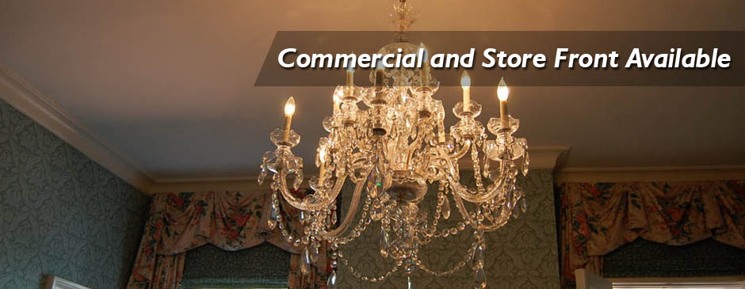
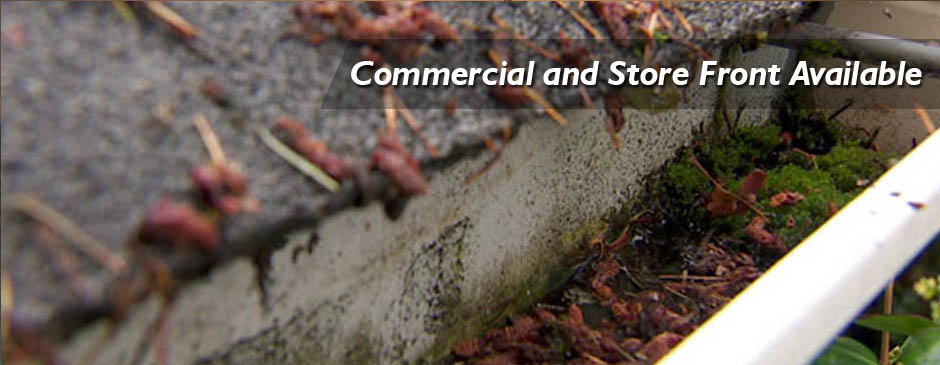
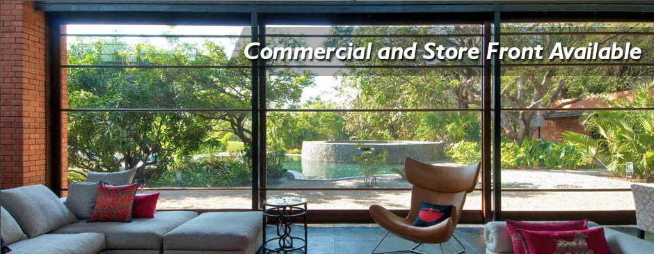
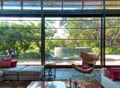
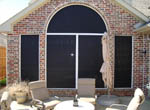
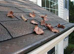

Phone: 281-733-3768




Beautiful View Window Cleaning, with a goal in mind, which is exceptional customer service and quality which we improve on after every job to equal perfection. We want the customers experience with Beautiful Views to be one that they cannot wait to call us for their next service
- Fully Insured & Bonded
- Multi-Service Discounts
- Year-Round Service
- All Work Guaranteed
- Construction Cleaning
Our Services

Windows
Our employees are trained to safely provide the highest quality work for our customers
Chandeliers
your chandelier is looking a bit dull, its normal beauty and brilliance diminished
Skylights
The best time to do it is when you are having your window clean, gutter or roof clea

Solar Screens
Window screens are fragile and can easily tear and stretch, Trying to clean the hard dirt

Gutters
We are your top local gutter cleaner! We offer supreme service at a fair price

Pressure washing Home
, House wahs ,Driveways ,Sidewalks ,Pool decks ,Patios ,Fences/decks ,Etc.